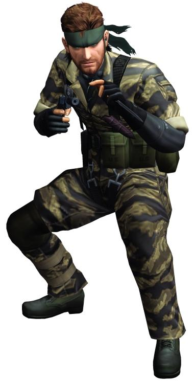

Metal Gear Solid is a stealth game series described as "tactical espionage action." The main concept of the game is to avoid detection by your enemies by any means necessary instead of facing them head-on, otherwise known as stealth. This allows for interesting and unique game mechanics that force you to use your environment and think outside the box. The first game that includes Big Boss, released for the Playstation 2, is about a secret agent that goes by the code name 'Naked Snake.' He is tasked to eliminate soviet forces in Vietnam, but his task force and boss betray him and he is left in the wilderness to die. At the end of the game Snake eliminates his former allies and begins to construct an army of his own, Fox Hound.
Naked Snake (a.k.a. Big Boss) Naked Snake possesses many skills that aid him in his missions, such as advanced combat training and knowledge of his environment. |
|---|
Sahelanthropus Each Metal Gear Solid game has a unique metal gear. Metal gears are bipedal robots that have the capability to launch and detonate nuclear warheads. |
Nathan Morales
Period 1